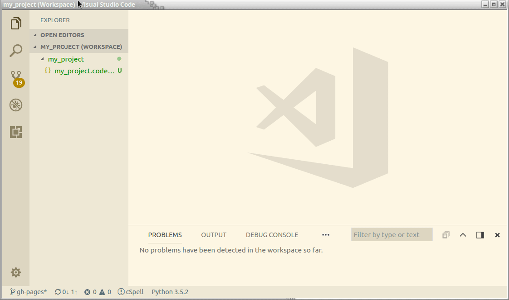

Introduction
Created for
Iva E. Popova, 2016-2022,

About me
Name: Iva E. Popova
- First PC: Pravetz 8d
- First OS: DOS
- First Programming Language: BASIC
- First tech. school: UKTC in Pravetz
What I've used Python for?
- Back-End Web Development.
- Data scraping, analyses and transformation.
- Machine Learning, Sentiment Analyses, Opinion Mining
- Natural Language Processing.
Tech skills
- HTML, CSS, JS(ES6+), React.js, Vue.js,...
- Python, Perl, C++, Prolog.
- GraphDB, MongoDB, MySQL/Postgre.
- RDF, WordNet.
- Knowledge representation, ontologies.
Teaching Experience
- Technical University:
- Programming languages
- Internet Programming
- Discrete Mathematics
- Artificial Intelligence and Expert Systems
- ProgressBG:
- Front-End Development (&& JavaScript)
- MySQL
- Python
- Machine Learning
Course Resources
Course Resources
GitHub Labs Repo
- Every code sample written during the labs will be uploaded into GitHub, on respective group repository:
- Python_Group1_Unicredit
- Python_Group2_Unicredit
- You can clone that branch to your machine by opening a terminal in your course root folder, and paste (without leading '$' sign) :
- the folder 'ProgressBG-Python-UniCredit-Labs' will be created
$ git clone https://github.com/wwwcourses/ProgressBG-Python-UniCredit-Labs.git -b Python_Group1_Unicredit --single-branch
$ git clone https://github.com/wwwcourses/ProgressBG-Python-UniCredit-Labs.git -b Python_Group2_Unicredit --single-branch
Course Email
progressbg.www.courses@gmail.com
- use it to ask any questions
- give any feedback
Course Calendar - Group1
Course Calendar - Group2
Get familiar with Python Language
Get familiar with Python Language
{kind=link}
picture source: @imgur.com
from If programming languages were essays...
{kind=link}
History
- Creator: Guido van Rossum
- Named after Monty Python's Flying Circus comedy show.
- Python 1.0 - January 1994
- Python 2.0 - October 2000
- Python 3.0 - December 2008
What's the use of Python?
- Python is a general-purpose programming language, used for:
- Web and Internet Development
- System administration (incl. cloud)
- Data Science, Big Data, Machine Learning
- Scientific computing
- Education
- Mobile apps development
- Embedded devices (incl. Raspberry Pi, Arduino, ...)
Python Interpreter
- Python is an interpreted language
- An interpreter is a program that directly executes the instructions in a high-level language, without converting it into machine code
- A compiler is a program that translates the source code into byte/machine code, and then execute it.
- Contemporary interpreters, like Python, use internal compiler to optimize their work.

Python implementations/distributions
Python is an open source project: Python's github
- CPython - the official Python distribution.
- PyPy - faster and compliant with Python2 and Python 3
- Jython - Python for the Java Platform.
- IronPython - the Python programming language for the .NET Framework.
- Pyjs - contains a Python-to-JavaScript compiler, an AJAX framework and more.
Setting up Python
Setting up Python (on Windows, Mac, Linux)
Install Python on Windows - HowTo
- Download the Python3 Installer:
- Python Releases for Windows
- Select 32-bit and 64-bit versions according to your system
- Customize installation:
- installation location:
C:/Python310 - Select "Add Python to PATH"
- Reference: Using Python on Windows - installation-steps @docs.python.org
Install Git (and Git BASH) for Windowss
- Git for Windows provides a BASH emulation terminal used to run Git from the command line.
Install Python on Mac - more info
Install Python on Linux
Verify installation:
- Open a Terminal/Command Prompt and type:
# check for python installed version: python3 --version # check for pip installed version: pip --version
Python IDEs and code editors
- Visual Studio Code
- a cross platform code editor that supports multiple programming languages.
- Free and open source ( vscode @github )
- Large and vivid community, supported by Microsoft
- Combines the simplicity of a code editor with what developers need for their core edit-build-debug cycle through many extensions.
- VS Code in the browser: vscode.dev
- JetBrains' PyCharm - The Python IDE for Professional Developers
- Sublime Text - Text Editing, Done Right
During the course, I'll be using VSCode.
Write Python in VS Code
Write Python in VS Code
VSCode intro
Useful Extensions
Useful Keyboard Shortcuts
Command Palette gives you access to all VS commands in the given context.
| Keys | Action |
|---|---|
| ctrl+shift+p | Opens Command Palette |
| ctrl+s | Save file |
| ctrl+` | Toggle Terminal/Output panel |
| ctrl+z | Undo what you've typed |
| ctrl+l | While in terminal will clear the output |
VSCode Workspace
- A Visual Studio Code "workspace" is the collection of one or more folders that are opened in a VS Code window (instance).
- The concept of a workspace enables VS Code to:
- Configure settings that only apply to a specific folder or folders but not others.
- Store and restore UI state associated with that workspace (for example, the files that are opened).
- Selectively enable or disable extensions only for that workspace.
- Persist task and debugger launch configurations that are only valid in the context of that workspace.
Prepare your Workspace
- Make a root folder for your python projects.
- Open vscode.
- Select "Add folder" and choose the folder you've made.
- In the sidebar, the "Explorer" will show your folder.
Prepare your Workspace - demo
Your Workspace should look like:

Workspace settings
- Press CTRL+SHIFT+P and type
Workspace Settings - Here you can change the default settings, as you wish in order to customize your experience with your project.
Create and execute a Python file
- Right click on the root folder in VS Code Sidebar.
- Select: "New File", enter the name:
say_hello.pyand press enter. - Write down this code (put your name in the quotes):
- Right click anywhere on the editor window and select "Run Python File in Terminal".
Note, this command will be present, only if you've been installed the extension: python by microsoft
my_name = "Iva"
print("Hello " + my_name)
Create and execute a Python file - demo
- A terminal panel should be opened in your editor showing the python script execution and its output: 
{kind=link}
Setup 'Run with Python' Task
Select Python version
ctrl+shift+p and find Python: Select interpreter
Useful videos
Useful Readings
These slides are based on
customized version of
framework